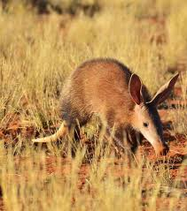

AARDVARK FACTS

Physical Traits
4-7 feet long
Sticky tongue 12 inches
Powerful digging claws
Habitat
Sub-Saharan Africa
Lives in burrows
Nocturnal animal

Diet
50,000 ants/termites per night
Uses long sticky tongue
Closes nostrils while eating